——保罗·麦卡特尼
——保罗·麦卡特尼
整数4意味着平衡：桥牌游戏有4个玩家，成对约会有4个人，桌子有4条腿。我们将看到在许多场景中，这个数都提供了完美的平衡，无论是4种颜色，4个旅行者，还是4个墙角。因此无论你是躺在四柱床上还是坐在惬意的四合院里，请享受整数4吧。
四色定理
地图对人们有一种美的吸引力，它将大量信息以直观的方式呈现出来。为了区分相邻区域，可以用不同颜色进行填充，给每个区域画不同的颜色，但是如果区域很多，对很多的颜色进行区分就会变得困难。
这引出了一个问题：“给地图着色，要让相邻区域都有不同的颜色，最少需要多少种颜色？”如果两个区域只有一个点挨在一起——就像亚利桑那州和科罗拉多州——它们可以用相同的颜色。稍作尝试就能发现有一些图至少需要4种颜色。图4.1给出了一个需要4种颜色的情形。
图4.1 有时候需要4种颜色，而且4种就够了
四色问题认为4种颜色对任何地图都够用了。这个论断最初是由古德里在1852年提出的。杰出数学家德摩根促进了这个问题的传播。这个问题的历史以及它的最终解决同样多姿多彩而且富有争议。肯普为最终的证明贡献了一些最初的思想，肯普在1879年认为自己已经证明了整个定理，但是在1890年，肯普发表的证明被发现有错误。在科学成果中的错误有各种原因（实验误差、统计分析错误、数据被损坏，等），但数学家出错通常只能怪自己。数学论断是基于逻辑，不会受主观或技术因素影响。
在肯普的证明中发现错误的是培西·希伍德，他所做的不仅仅是发现错误，他还发现肯普的证明修改之后可以证明任意地图最多需要5种颜色。既然发现了只需5种颜色的证明，人们难免会期待发现只需4种颜色的证明也不会太久。然而，这个证明的出现还需要等待几十年，而且证明的方式也出人意料。
1976年，凯尼斯·阿佩尔和沃夫冈·哈肯宣称他们证明了四色定理。之所以说“宣称”是因为当时——甚至现在——许多数学家都不承认这个证明。为什么呢？阿佩尔和哈肯将对这个定理的证明分解成了对1936种特殊情形的检验（后来缩减为1482种），然后他们用计算机检验了每种情形。如果写出所有细节，将会有几百页，1万多张图。为什么一些数学家不喜欢这个证明呢？因为他们打心底里不信任计算机。数学家认为自己与其他领域的学者的区别在于论证逻辑的滴水不漏。逻辑不受实验观测、专家看法和大众意见的影响，逻辑论证可以永存。数学家的许多精力都用于确保证明的准确无误，将证明的一部分交付给机器的想法让人不齿，对于纯粹主义者尤其是这样。虽然阿佩尔和哈肯解释了他们证明的结构，即为什么检查有限数量的情形就够了，也解释了计算机是如何检查的（任何人都可以复现），许多数学家仍然觉得这有点糊弄人。除了对计算机的怀疑，也有一种期待，认为陈述简单的猜想也应当有同样简洁的证明。当然，谁都会欢迎更简洁传统的证明，但这个干净利落的证明也许根本不存在，我们可能不得不接受对一个简单优雅问题的冗长证明。
证明4色够用和5色够用的难度的巨大鸿沟也反映在着色算法中。对一个具体的地图，知道4种颜色够用是一回事，找到着色方案又是另一回事。1996年，用5种颜色着色的算法被设计出来，这个算法的计算复杂度正比于区域的数量。而用4种颜色着色的算法复杂度则正比于区域数量的平方，计算量要大得多。
网球定理
你有没有注意过标准网球的有趣样式？球缝将球分成了两块相同的哑铃形状，棒球也有同样的样式（图4.2）。如果你沿着球缝滑动手指，在4个点上手指的滑动会从“向左弯”变成“向右弯”，或者反过来。这不是巧合。这些既不向左也不向右的特殊点称为拐点。网球定理证明，如果一条平滑闭合的曲线将球面分成两块面积相等的区域，则曲线上至少有4个拐点。如果沿赤道将球面对分，则曲线上的每个点都是拐点。请注意如果将等面积的条件去掉，则定理可能不成立。例如，如果曲线是北回归线，则曲线总会朝一个方向弯曲，从而没有拐点。
图4.2 网球和棒球
平方和恒等式
如果n是正整数，加起来等于n的最少平方数是什么？如果n是素数，有时候只需要两个平方项。费马二平方数定理给出了一个漂亮的结果：如果p是素数并且p=1（mod 4），则存在整数x和y使得p=x2+y2。例如13=22+32，41=42+52，137=42+112。
费马二平方数定理很容易推广：如果n的素因数都等于1（mod 4），则n是二平方数之和。为什么？设n是素数乘积，n=p1p2·……·pk，其中每个素因数都等于1（mod 4）。则所有这些素数都可以写成二平方数之和。利用斐波那契—婆罗摩笈多公式，即
乘积p1p2也是二平方数之和，将结果乘以p3仍然是二平方数之和。这个过程可以不断重复直到得到n为二平方数之和。
当然，许多数（无论是否素数）都无法写成二平方数之和。7就需要4个平方数：7=22+12+12+12。是不是所有正整数都可以写成4个平方数之和？是的！这就是拉格朗日四平方数定理。一个类似斐波那契—婆罗摩笈多公式的重要工具是欧拉四平方和恒等式：
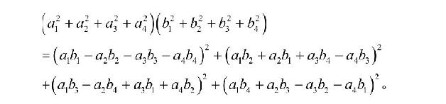
有一个类似费马二平方数定理的结果证明所有素数都能写成四平方数之和，再利用欧拉恒等式，就可以得出拉格朗日定理。
四块重排
1907年亨利·杜德耐给出了一个有趣的难题，问的是如何将一个等边三角形分成4块重新排列成正方形（图4.3）。杜德耐的难题是一个更广义的有趣数学结果的特例。华勒斯—波埃伊—格维定理证明任意两个等面积多边形都是等可分解的，也就是说其中一个多边形可以分解成有限多块，然后重排成另外那个多边形。
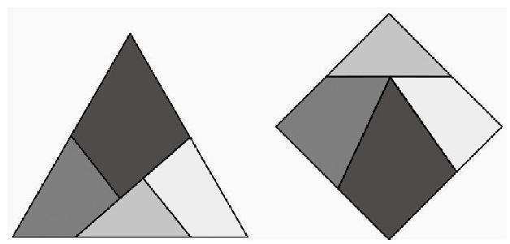
图4.3 将等边三角形变成正方形
这个惊人定理的证明可以分成几步。首先注意到，如果任意多边形都能分解后重排成等面积的正方形，我们就成功了。要实现这一点，先将多边形剪成三角形，然后将所有三角形都剪成两个直角三角形。现在开始重构，将每个直角三角形剪一刀，让剪出的两片可以组成矩形。最难的一步是证明矩形可以分解重构成任意等面积的矩形。然后就可以把适当大小的矩形排在一起形成正方形。
虽然这个证明给出了将一个多边形变成等面积的另一个多边形的算法，但产生的碎块数量可能会很多，这也是为什么杜德耐难题很神奇：4块就够了。
不过，在作出关于等可分解的论断时必须小心。图4.4将一个正方形分解成4块然后重排成了一个矩形，对比面积我们发现64=65。你知道为什么吗？答案在第10章。
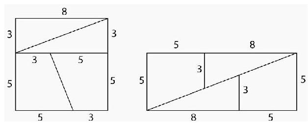
图4.4 图中有什么错误
杜奇序列
我们来玩个游戏。从4个数开始，比如（2，5，7，13），依次取前后两个数之差的绝对值——想象成“回绕”，这样2和13就相邻——形成新的数：（3，2，6，11）。重复这个过程得到
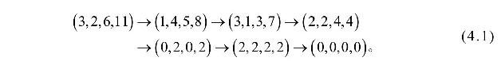
当然（0，0，0，0）迭代回自身。对这个过程有一个漂亮的收敛性定理：如果从任意4个数开始，得到的序列在有限次迭代后都会到达（0，0，0，0）。这个现象的发现被归功于杜奇，因此研究这个过程（及其变体）的大部分论文都称之为杜奇序列。
最早发现这个序列的是1937年意大利一篇鲜为人知的论文。由于读到这篇论文的人很少，因此杜奇序列的收敛性定理又被重新发现和证明了好几次。为什么被发现这么多次？首先因为它简单，小孩都能玩。其次，即便你相信其他人已经发现了这个过程，你又如何能找到呢？虽然有许多搜索数学文献的工具，要找一个没名字或者性质复杂的思想还是很困难。因此在杜奇序列变得知名之前，它们注定会被反复发现多次。
读者可能会注意到杜奇序列与上一章介绍的3x+1有些类似。英国数学家布莱恩·史威兹——你可能记得他声称提出了3x+1问题——对这两个问题写了一篇短文，“两个猜想，或如何赢得1100元”。他不知道杜奇问题很久前就被解决了，为这个问题提供了100美元奖金，看上去更难的3x+1则附带了1000英镑的奖金。这就好像将金鱼扔进了食人鱼水箱，第一份奖金很快被抢走，当然，第二份奖金一直留到了今天。揭示这两个问题的区别的一个现象是迭代过程中大小的变化。对于杜奇序列，4元组中最大的数不会变得很大（通常是变小）。在例（4.1）中，最大值是
13→11→8→7→4→2→2→0。
与之对比，3x+1问题中的迭代可能会冲破天际，也可能跌到谷底，没有明显的模式使得3x+1问题困难得多。
将杜奇过程应用于3元组不会得到同样的结果。例如，
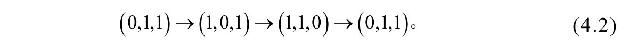
这个过程进入了循环，永远到不了（0，0，0）。项的数量也能告诉我们关于长期动力学行为的信息吗？一个更广义的定理证明如果项的数量是2的幂，则任何初始序列在有限步迭代后最终都会到达全零。如果项的数量不是2的幂，则必然存在像例（4.2）这样循环的初始数集。
虽然从4个数开始的杜奇序列会到达全零，但迭代步数并没有上限。例如，用前3项之和作为下一项的斐波那契序列定义为
这个序列的前几项为1、1、2、4、7、13、24、44、81、149、274。对（tn，tn−1，tn−2，tn−3）应用杜奇过程，会揭示出一个美丽的结构：3次迭代会得到一个移位版的2·（tn−2，tn−3，tn−4，tn−5）。例如，从（t104，t103，t102，t101）开始，150次迭代后得到移位版的250（t4，t3，t2，t1），再迭代6次就能得到（0，0，0，0）。通过选取更大的n，我们可以让到达（0，0，0，0）的迭代次数想要多大就多大。
如果我们不限于整数，还会发生奇怪的事情。常规的斐波那契数列前后两项之比会无限趋近黄金比例，3项和的斐波那契数列的前后两项之比会趋近无理数q≈1.839，方程q3−q2−q−1=0的解。这意味着通过选择很大的n，（tn，tn−1，tn−2，tn−3）会接近缩放版的（q3，q2，q，1）。这个无理数4元组以一种有趣的方式迭代：
也就是说，（q3，q2，q，1）会得到自己的缩放版！由于缩放因子（q−1）4小于1，因此这样的迭代也会趋近全零，但需要无穷多次迭代。
欧拉猜想
欧拉证明了费马大定理的3次幂情形，即x3+y3=z3没有正整数解。另外欧拉也给出了类似的猜想，如果n＜k，方程
没有正整数解。欧拉猜想包含了两个更早的结果，因为k=3就是费马大定理的3次幂情形，n=2时就是费马大定理。
欧拉猜想悬置了几个世纪，同费马大定理一样，也被认为是太难攀登的一座高峰。它是一个典型的很容易描述但却似乎缺乏解决工具的问题。让人吃惊的是，1966年兰德尔和帕金发现了一个k=5的反例。利用计算机暴力搜索，他们发现
2004年，又有一个反例
被吉姆·弗莱伊发现。
发现k=5的解后，一个自然的问题是k=4是否存在反例。1986年，诺姆·艾尔基斯利用现代数论研究的一个工具——椭圆曲线——发现了一个反例：
26824404+153656394+187967604=206156734.
事实上，艾尔基斯的方法能得到无穷多组解。艾尔基斯20岁就作出了这项发现，这个再加上其他一些成果奠定了他作为同代人中最杰出数学家之一的地位。他还擅长钢琴和作曲，且棋艺精湛。26岁时他成为了哈佛大学最年轻的终身教授（图4.5）。
有趣的是，唐·扎格尔，一位已经成名的数学明星，当时也在独立研究相同的问题。同艾尔基斯一样，扎格尔也是很年轻就获得了博士学位。他在数论领域作出了开创性的贡献，并且同时在德国波恩的马普数学研究所和巴黎的法兰西学院任职。扎格尔还是一位语言天才，擅长多种语言，包括英语、德语、法语、荷兰语、意大利语和俄语。
回到k=4的欧拉猜想。扎格尔的研究始自1986年在伯克利与一位同行的聊天，聊天让扎格尔萌发了新的思路。在通过这种新思路取得一些进展后，扎格尔到莫斯科去住了两个月。他当时需要一台计算机，但他用计算机的想法在政治还在解冻的苏联没法实现。仅仅依靠一台口袋计算器——当时没法携带更强力的工具——他无法完成必需的计算。不过他并没有担心，因为他很快就会回波恩，这个猜想已经悬置两百多年了，没有人会抢他的先。
图4.5 诺姆·艾尔基斯（左）和唐·扎格尔（右）
他错了，扎格尔一回来，一位同事就兴奋地告诉他欧拉猜想在几天前已经被一位年轻的美国人诺姆·艾尔基斯解决了。扎格尔冲向计算机，不一会儿就找到了一个解。因此欧拉提出的这个问题在悬置两个多世纪后被两个人（图4.5）在前后几天里同时解决。
维拉索圆
在第3章我们看到了环形曲面上的圆，圆族可以以两种方式完全覆盖环面（图4.6）。另一种观察方式是注意到环面上的每个点都有两个完全位于曲面上的圆通过。贪心的我们会问：“还有没有更多位于环面上的圆通过某个给定的点？”让人吃惊的是，答案是有，每个点还有两个圆通过，这些圆称为维拉索圆。要构造这种圆，首先构造一个穿过给定点和环面中心点的垂直平面。然后倾斜平面，同时保持穿过这两个点，直到在另一个点与环面相切，这时平面与环面的交线就是一个圆（图4.7）。有两个倾斜角可以产生这种效果，从而可以形成两个圆。因此环面上每个点都有4个完全位于环面上的圆穿过。
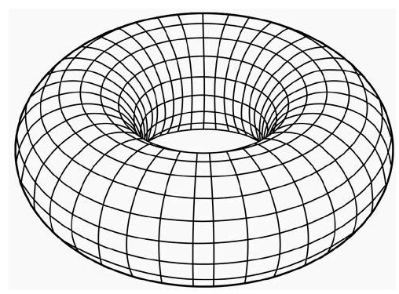
图4.6 环面以及两种圆覆盖
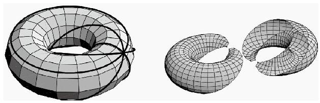
图4.7 维拉索圆
内接正方形问题
这个命题的表述很简单：在任意简单的闭合曲线上，存在可以组成正方形的4个点。图4.8给出了一个例子。
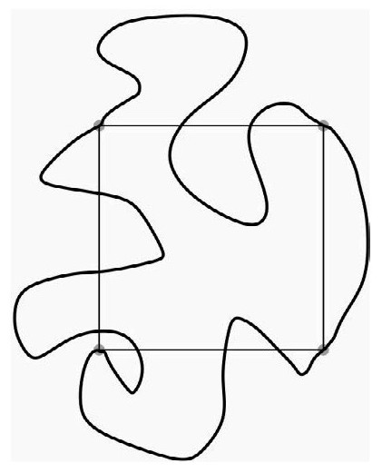
图4.8 内接正方形
一些曲线（例如圆）有无穷多个内接正方形，而非圆椭圆或存在大于90°内角的三角形则只有一个内接正方形。内接正方形问题由奥托·托普利兹在1911年提出，有时候也称为托普利兹问题。已经证明如果曲线足够光滑，则存在内接正方形。不幸的是，一般性证明很难理解。
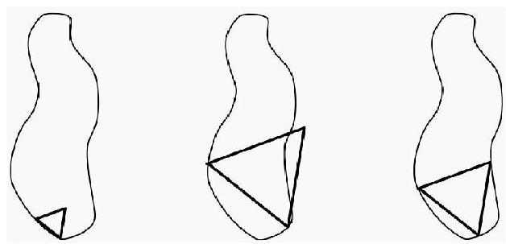
图4.9 构造内接等边三角形
不过我们并不是一无所获，很容易证明所有简单的闭合曲线都有内接等边三角形。从曲线内部一个小的等边三角形出发。通过移位和旋转，可以让它的两个点保持在曲线上，第3个点则位于曲线内部。现在开始将前两个点的距离拉大并保持在曲线上，同时改变第3个点的位置，让三角形一直保持等边。如果前两个点的距离一直拉大，第3个点就会移动到曲线的外部，因此在移动过程中它必然会在某个时刻穿过曲线。这时我们就得到了所有点都在曲线上的等边三角形。图4.9展示了这个平衡时刻：一个三角形太小，一个太大，还有一个刚好。
计算机屏幕上的正多边形
如何才能在计算机屏幕上绘制一个完美的多边形？“完美”的意思是多边形的每个点都刚好位于某个像素的中心。不幸的是，对计算机图形学来说，除了正方形，其他正多边形都不可能做到这一点。
图4.10解释了为什么正五边形做不到。假设五边形的点都有整数坐标，将每条边旋转90°（图中虚线）会形成一个被围住的五边形，它的点也是整数坐标。当然，这个过程可以迭代，不断生成更小的五边形，直到太小从而得出矛盾。同样的过程也可以生成其他边多于4条的正多边形。对等边三角形也可以得到同样的结果。为什么？如果等边三角形有整数坐标，则必然也存在具有整数坐标的正六边形，但是我们已经证明了这是不可能的。
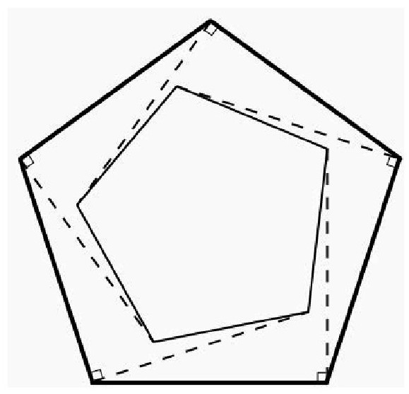
图4.10 正五边形不可能有整数坐标
四旅行者问题
假设有4条笔直的路，任意两条都不平行，也没有3条相交于一点（这有时候被称为一般位置）（图4.11）。在每条路上有一位旅行者匀速前进（通常速度各不相同）。有时候出于巧合，旅行者的位置和速度刚好会使得旅行者1和2相遇，然后两者分别与其他人相遇。这个命题认为旅行者3和4也会相遇。
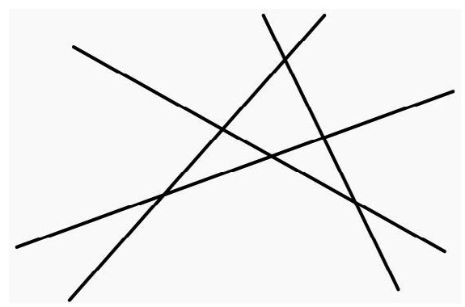
图4.11 位于一般位置的4条线
做一些代数计算就能解决这个问题，在这里就不再展示。不过我们会展示与解有关的一些有趣的技术细节。用t1表示旅行者1和2相遇的时间，t2为旅行者1和3相遇，t3为旅行者1和4相遇，t4为旅行者2和3相遇，t5为旅行者2和4相遇，t6为旅行者3和4相遇。在这6个时间点之间有一个神秘的关系式。如果
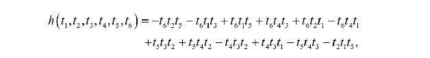
则
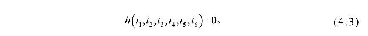
如果给定其中任意5个时间，则很容易算出第6个。例如，假设给定每个旅行者在某个时间t的位置（表4.1）。通过代数计算可以得出相遇时间，见表4.2。类似的也可以分析最一般性的问题，得出等式4.3。
表4.1四旅行者的位置
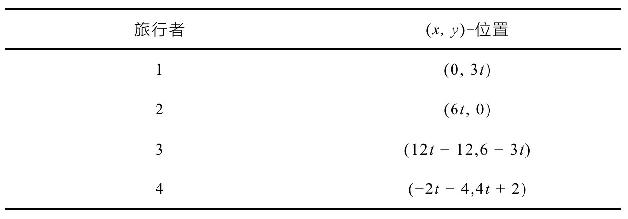
表4.2四旅行者相遇的时间
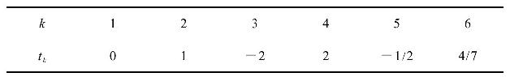
虽然h的表达式看起来很复杂，其中却隐藏了很丰富的结构。考虑到四旅行者问题本身的结构，这并不奇怪，问题本身的不变性质会对解施加约束。例如，如果改变时间单位——比如从分钟变成小时——结果应当不会改变。因此对任意常数c，可以得到恒等式
如果时间移位，可以得到函数h的另一个代数性质。例如，如果我们让t=0表示中午而不是早上8点，t的移位值为4。这个移位会使得所有相遇时间都移位相同的量，等式（4.3）应当仍然成立。因此对于任意值s，应当有
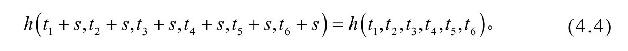
这个恒等式可以通过将左边展开化简来进行验证。最后，如果我们将下标1和2交换，则t1和t6保持不变，t2和t4交换，t3和t5交换。时间交换后得到如下公式
其他5种交换方式可以得到另外5个等式：
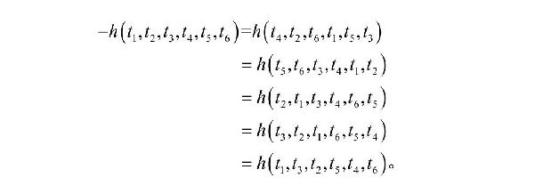
四旅行者问题展示了隐藏在一些漂亮的代数方程中的有趣的几何结构。
四指数猜想
第一章曾说过，实数可以分为两类：有理数和无理数。因为有理数可数，而无理数不可数，因此似乎“大多数”数都是无理数。如果你在实数线上扔一个飞镖，从概率上来说，有100%的可能会击中某个无理数。
无理数还可以细分。数x称为代数数，如果存在整系数的单变量多项式p使得p（x）=0。例如，x=3¼是代数数，因为当p（x）=x4-3时p（x）=0。不是代数数的数是无理数的一个子类，称为超越数。同有理数可数一样，也可以用类似的方法论证代数数也可数，这意味着超越数也主宰了实数线。
要证明一个数是无理数不是容易的事情，而要证明它是超越数更是困难得多。1761年，约翰·海因里希·朗伯特证明π是无理数，而第一个π是超越数的证明则要等到1882年才出现。由于几乎所有数都是超越数，因此最好是有简单的方法可以检验给定的数是不是超越数。这方面最简单的结果可能是格尔丰德—施奈德定理。这个定理说的是如果a和b是代数数（0和1除外），b是无理数则ab是超越数。例如，用这个定理很容易证明
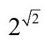
是超越数，这个数也被称为格尔丰德—施奈德常数。这个定理有时候可以从反面证明一些有趣的结果。欧拉公式eπi=−1是数学中最漂亮的公式之一，将其重新写成（eπ）i=−1，然后令a=eπ和b=i。由于公式右边的−1不是超越数，因此定理的前提必定有某个地方不成立。指数b=i是无理数和代数数，因为i2+1=0。另外a=eπ既不是0也不是1。因此唯一的可能只能是eπ不是代数数，因此它是超越数。
尚未解决的四指数猜想将超越数与4联系到了一起。假设x1、x2和y1、y2是复数对，对有理数具有线性独立性。意思是如果存在有理数p和q使得px1+px2=0或py1+py2=0，则p=q=0。这个猜想认为
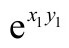
、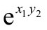
、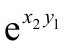
、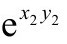
这4个数中至少有一个是超越数。这个猜想由西奥多梅龙·施奈德在1957年提出。同心四边形
托勒密定理是古希腊几何留下的宝石之一。假设一个四边形同心，即四个点共圆，如果边长依次是s1、s2、s3和s4，对角线长度分别是d1和d2（图4.12），托勒密定理证明
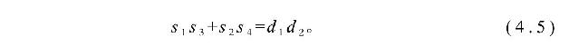
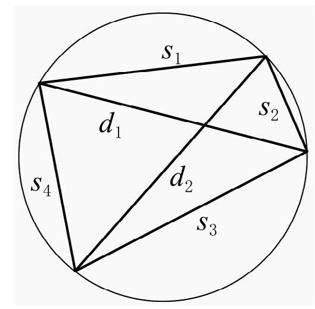
图4.12 托勒密定理
另外，托勒密定理的逆也成立：如果四边形满足等式（4.5），则必然同心。这就提供了一个检验四边形是否同心的简便方法，当然，是有时候简便。从计算的角度看，计算6个长度涉及平方根，因此如果需要数值近似，则计算可能会有偏差。此外，式（4.5）需要将四边形的边长配对，从图上来看相当直接，但如果想编计算机程序将点依在圆上的顺序排列，做法并不简单。
为了解决这个问题，可以将四边形表示为另一种形式。设四边形的4个点是复平面上的复数a、b、c、d。式（4.5）可以重写为
刻画四点共圆的另一种形式涉及复分析中常用的一个量：交比。交比记为cr（a,b，c,d），定义为
交比有很长的历史，但直到19世纪才得到深入研究。这个看上去有些奇怪的量有一个优点是可以刻画四点共圆：4个复数a、b、c、d组成的四边形同心当且仅当量cr（a,b，c,d）为实数。利用这个特性证明四边形同心避开了前面提到了的两个麻烦，不涉及平方根，并且不用对a、b、c、d排序。
喜欢代数的人可以用一个有趣的公式将这两种方法联系起来：
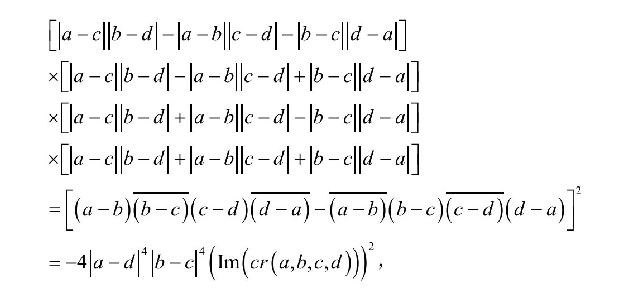
表达式Im（z）表示z的虚部。这个等式对任意复数a、b、c、d都成立。左边是4个长式子的乘积，如果前3个式子任何一个等于0，等式就等价于式（4.5）（取决于点的顺序）。第4个式子全部由正数组成，绝不会等于0。当交比为实数时，式（4.5）的右边等于0（假设4个点不重合）。因此托勒密定理与交比法是等价的。
四帽子问题
为了惩罚淘气的学生，老师决定不让他们课间休息，他们必须安静地坐在教室里。不过老师还是给了他们一条出路，出了一个题目让他们解答。男孩们坐成一条直线，其中3个人朝着同一个方向，第4个人则朝着相对的方向。在前3个人和第4个人中间放了一块板子（图4.13）。然后老师在每个人的头上戴了一顶帽子，两顶是黑的，两顶是白的。男孩们都知道每种颜色的帽子各有两顶，但只知道他看得到的人戴的什么颜色：C知道B的颜色，D知道B和C的颜色。没人能看到自己帽子的颜色。
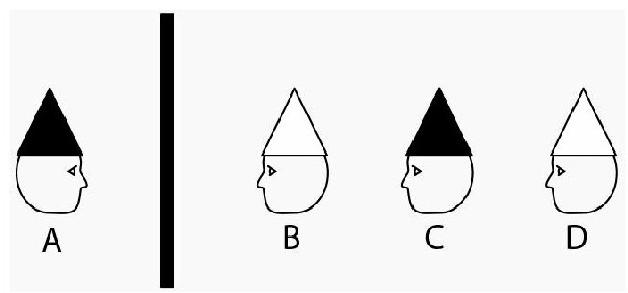
图4.13 四帽子问题
老师说：“你们可以出去玩，但先得解决一个问题。在5分钟之内，你们中的一个必须说出自己帽子的颜色。如果你对了，就可以出去玩。如果谁说错了，你们都不能出去，相互之间不能说话。”一分钟后，其中一个人说出了自己帽子的颜色。请问这个人是谁，他又是如何知道的？答案在第10章。
这个问题的一个变体是有3顶白帽子和一顶黑帽子，B、C和D相互可以看见对方，A不能看见其他人。一分钟之后有人知道了自己帽子的颜色，他是如何知道的？答案在第10章。